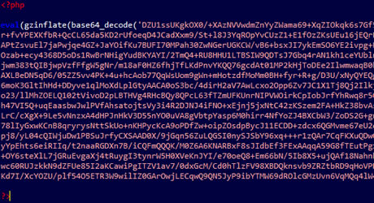

Enoncé
Dans ce challenge, vous devez rédiger un programme qui met en place une sorte de compression par "Run Length Encoding". Il s'agit d'obtenir une représentation plus compacte d'une suite de caractères en remplaçant les séquences de caractères identiques par une indication du nombre de caractères identiques consécutifs. La séquence aaaaaaa sera ainsi représentée par 7a (le nombre 7 et le caractère a).
Afin d'éviter d'augmenter la taille de la suite de caractères, on ne traitera ainsi que les séquences de (strictement) plus de 2 caractères identiques. En effet, 2i comprend 2 caractères tout comme la séquence ainsi représentée ii, la compression n'aurait alors pas d'intérêt. Donc aaaaaaabbbbii sera remplacé par 7a4bii.
Format des données
Entrée
Une unique suite de lettres en minuscules comprises entre a et z.
Sortie
La série compressée.